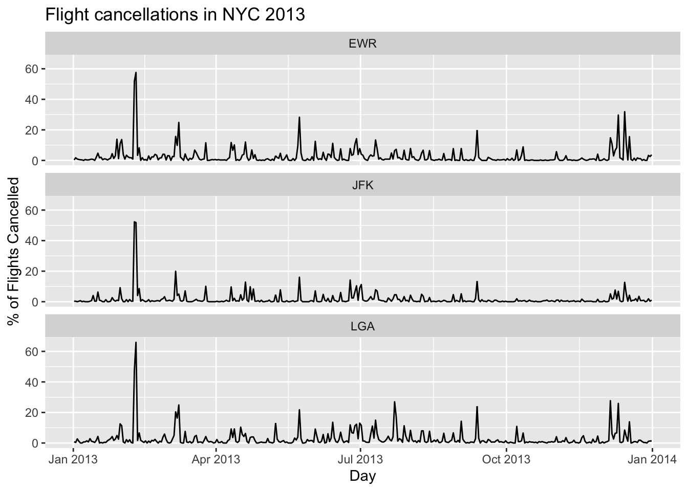

install.packages(c("tidyverse", "nycflights13", "devtools"))Installing R and RStudio
1. Install R and RStudio
Download R @ The R Project’s Home Page * Windows: [https://cran.r-project.org/bin/windows/base/R-4.2.1-win.exe] * Mac (Intel): https://cran.r-project.org/bin/macosx/base/R-4.1.2.pkg * Mac (ARM: new mac models manufactured since November 2020) https://cran.r-project.org/bin/macosx/big-sur-arm64/base/R-4.1.2-arm64.pkg * Linux https://cloud.r-project.org/bin/linux/
Download RStudio Desktop from RStudio * Windows https://download1.rstudio.org/desktop/windows/RStudio-2021.09.1-372.exe * Mac https://download1.rstudio.org/desktop/macos/RStudio-2021.09.1-372.dmg * Linux https://www.rstudio.com/products/rstudio/download/#download
Run the installers for R and RStudio, in that order.
2. Open RStudio
It should look like this when you do:
3. Install additional packages and data
- copy-paste the text below into the command window
- hit enter
- accept any defaults if you get prompted
- this may take a little while. But nothing too exorbitant.
This picture should show where you paste the command before hitting enter
Test it out
Copy-paste the following text into the command window and hit enter.
If the graphs show up then you have installed all the necessary packages. Don’t worry if you don’t understand the commands.
library(tidyverse)── Attaching packages ─────────────────────────────────────── tidyverse 1.3.1 ──✔ ggplot2 3.3.6 ✔ purrr 0.3.4
✔ tibble 3.1.7 ✔ dplyr 1.0.9
✔ tidyr 1.2.0 ✔ stringr 1.4.0
✔ readr 2.1.2 ✔ forcats 0.5.1── Conflicts ────────────────────────────────────────── tidyverse_conflicts() ──
✖ dplyr::filter() masks stats::filter()
✖ dplyr::lag() masks stats::lag()library(nycflights13)
flights <- flights |>
mutate(cancelled = is.na(arr_delay) & is.na(dep_delay),
Day = ISOdate(year, month, day))
flight_report <- flights |>
group_by(Day, origin) |>
summarise(Cancelled = mean(cancelled)*100)`summarise()` has grouped output by 'Day'. You can override using the `.groups`
argument.ggplot(flight_report, aes(x = Day, y = Cancelled)) +
geom_line() +
facet_wrap(~origin, ncol = 1) +
labs(title = "Flight cancellations in NYC 2013",
y = "% of Flights Cancelled")
You can add options to executable code like this
[1] 4The echo: false option disables the printing of code (only output is displayed).